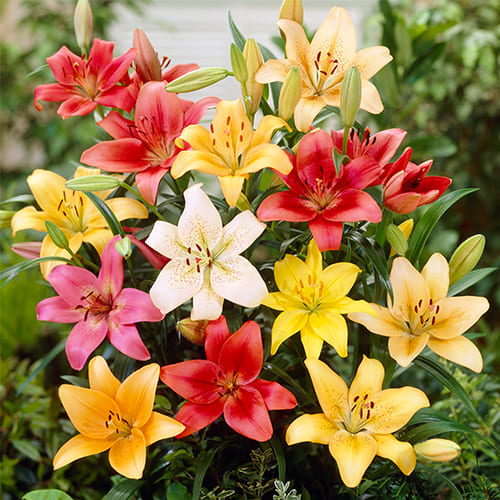
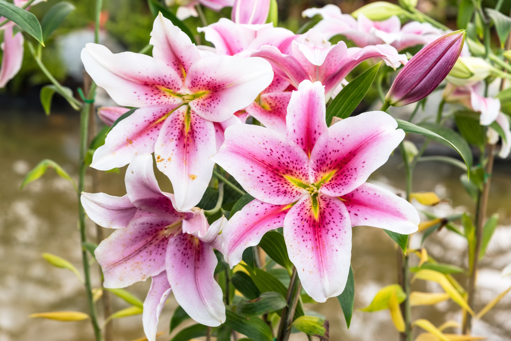
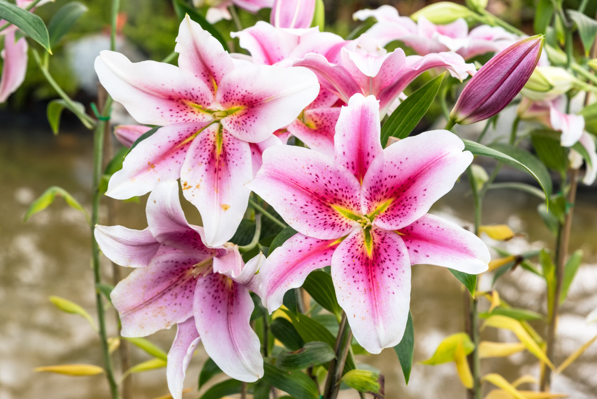
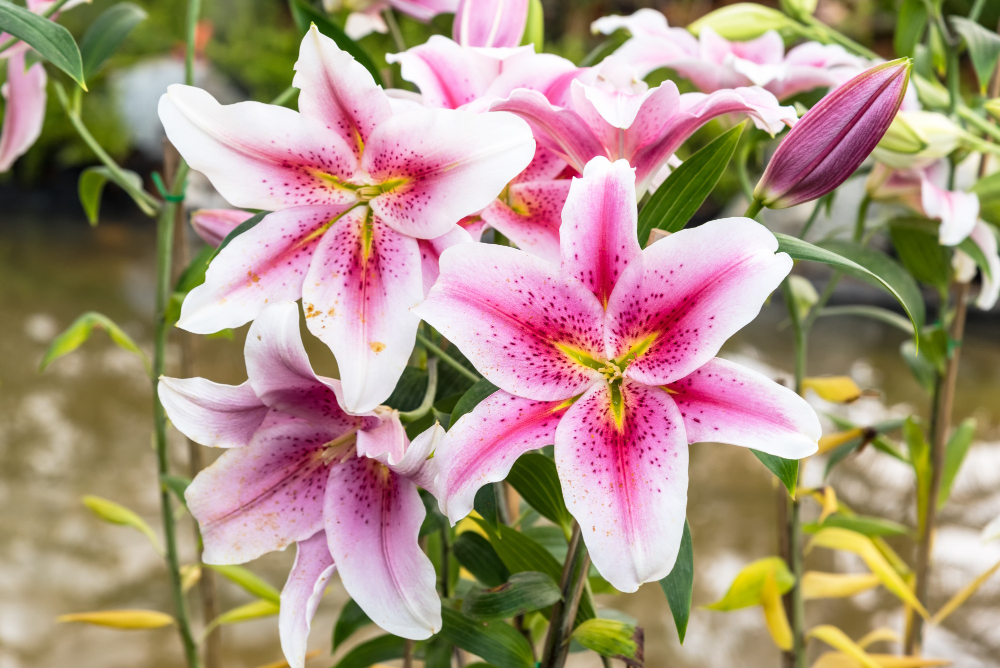

Lirios

 


Los lirios son flores elegantes y sofisticadas, conocidas por su forma distintiva y sus pétalos anchos y alargados. Estas flores pertenecen al género Lilium y vienen en una variedad de colores, incluidos blanco, amarillo, rosa, rojo y naranja. Los lirios son populares en arreglos florales debido a su belleza y su fragancia suave, y son símbolo de pureza y refinamiento. Suelen florecer en verano y pueden crecer hasta 1.5 metros de altura, añadiendo un toque de majestuosidad a cualquier jardín o bouquet.
Volver a la página principal